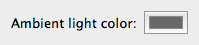
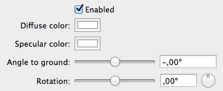

You can freely configure the scene lighting. Two types of lights are available: A general ambient light and three directional diffuse light sources.
They are configured in the document window.

The ambient light illuminates all parts of the scene equally and is therefore responsible in particular for the brightness of parts that lie in shadows. You only have to adjust the color. Lighter colors give brighter scenes. With the hue, you can create different moods.

The three directional light sources provide the main scene illumination. In a new document, only one of them is turned on. You can change the direction they are lighting from and the colors.
Most important is the diffuse color. This controls the general light color and intensity. The specular color controls the light of glossy highlights. Not all objects show a lot of this. You can adjust gloss by modifying the meshes.